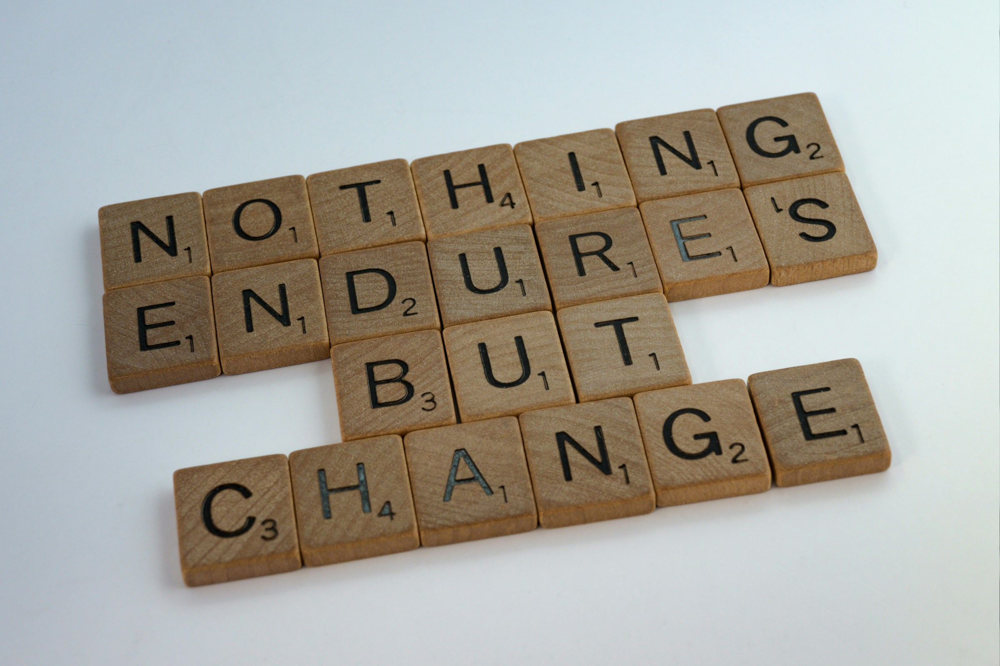

Our Resources
In this page you can find a collection of all the different resources we have created across the year to support researchers in the Arts, Humanities, and Social Sciences who want to embed computational and data-led methods in their research. These resources have been created in the context of the Centre for Data, Culture & Society and the EFI Data-led Skills Innovation Programme.
The Centre for Data, Culture & Society provided a space for methodological experimentation, innovation and skills development, and gave tailored advice and support to research groups and projects. We supported the critical and creative exchange between technology and the arts, humanities and social sciences. We empowered researchers in these disciplines to explore and engage with data and digital research methods.
The Centre activities are now been merged with the work done by the EFI Data-led Skills Innovation Programme.
Our Material
Tutorials
Across the years we have started developing a series of self-contained tutorial based on the content of our training programme. At the moment there are around 6 tutorials you can explore on topic ranging from working with Network Analysis to using small language models locally
Explore our TutorialsSearch our Repositories
All the material that we have prepared for our Training Programme is hosted in our Repository . There are currently more than 100 repositories developped in the last 6 years. Each repository will contain a readme.md file with instructions on their content and how to use them.
Use our Search ToolPathways of Learning
The world of digital research methods can offer overwhelming possibilities so, with the help of researchers that have already implemented digital methods in their own work, we are building a series of pathways that will guide beginners through the steps and concepts they need to master new methodologies.
Explore our PathwaysResearch Adaptation Guidance

In June 2021 we held three online workshops focused on adapting approaches to research in the context of ongoing remote and hybrid working. Each workshop focused on one research area that has been significantly impacted by social distancing measures, with the aim of capturing ideas, resources, advice and tips from the community to share more widely.
More on Research AdaptationMethods Workflows
In this page you can explore a series of workflows and mind maps that will help you identify the right answer/choose the best analysis for your data analysis
Explore our Workflows